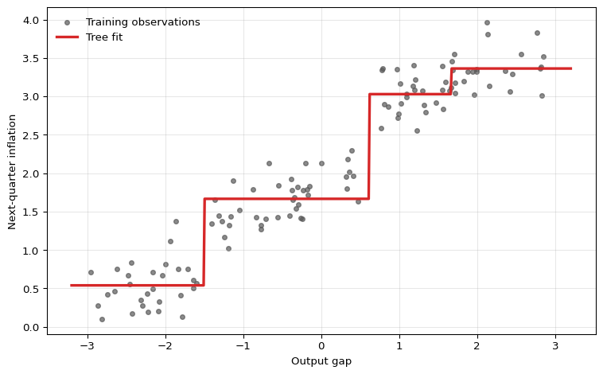
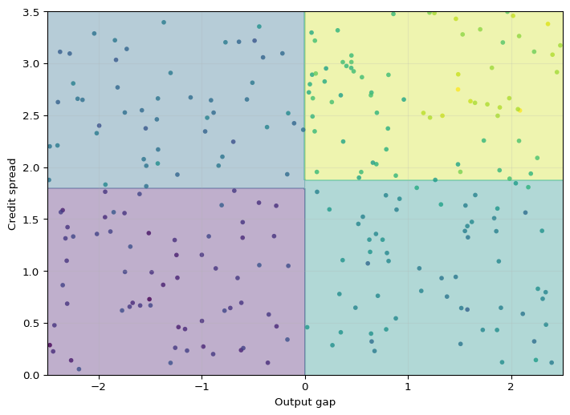
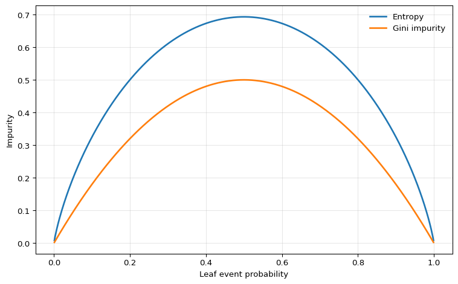

Under active development. A stable version is expected in November 2026. Feedback is very welcome.
10 Decision Trees
10.1 Overview
Decision trees are nonparametric estimators that approximate an unknown conditional mean or conditional event probability by repeatedly splitting the predictor space and assigning a constant prediction within each resulting region. For econometricians, they are useful when thresholds, interactions, and regime changes matter but are hard to specify in advance. A tree can learn rules such as “if the output gap is negative and credit spreads are high, predict lower GDP growth” without the researcher having to write down all interactions beforehand.
Single trees are attractive because they are interpretable, but that interpretability comes with important weaknesses. Trees are discontinuous, unstable, and unable to extrapolate outside the support of the training data. Those weaknesses are the reason why later chapters move from single trees to random forests and boosting.
10.2 Roadmap
- We start with regression trees and show how they approximate the conditional mean by partitioning the predictor space into leaves.
- We then explain recursive binary splitting, the greedy algorithm used to construct a tree.
- Next we turn to classification trees, impurity measures, and the interpretation of leaf predictions as event probabilities.
- We then discuss overfitting, stopping rules, and cost-complexity pruning.
- Finally, we summarize when trees are useful for econometric work and where they fail.
10.3 Regression Trees
Suppose we observe a training sample \(\{(x_i, y_i)\}_{i=1}^n\) with \(x_i \in \mathbb{R}^p\) and scalar response \(y_i\). A regression tree with \(J\) leaves predicts
\[ \hat f(x) = \sum_{j=1}^J \hat w_j \mathbf{1}\{x \in R_j\}, \]
where the leaves \(R_1, \ldots, R_J\) form a partition of the predictor space.
Definition: Regression Tree
A regression tree is a piecewise-constant estimator of the conditional mean function. Each leaf \(R_j\) corresponds to a region of the predictor space, and all observations in that region receive the same prediction \(\hat w_j\).
Leaf Predictions Under Squared Loss
If the regions \(R_1,\ldots,R_J\) were fixed, the optimal leaf value in region \(R_j\) solves
\[ \hat w_j = \arg\min_w \sum_{i:x_i \in R_j} (y_i - w)^2. \]
Taking the derivative with respect to \(w\) gives
\[ -2\sum_{i:x_i \in R_j}(y_i - w) = 0 \quad \Longrightarrow \quad \hat w_j = \frac{1}{N_j}\sum_{i:x_i \in R_j} y_i, \]
where \(N_j = \sum_{i=1}^n \mathbf{1}\{x_i \in R_j\}\) is the number of observations in leaf \(j\).
So once the partition is chosen, the fitted value in each leaf is just the sample mean of the responses in that leaf. The real problem is therefore choosing the partition.
Econometric Interpretation
A regression tree is a data-driven threshold model. Each split creates a regime such as output_gap <= 0.5 or credit_spread > 1.8, and the fitted value in that regime is a local average. In that sense, trees behave like automatically selected interacted dummy regressions with unknown thresholds.
Recursive Binary Splitting
In principle we would like to choose regions \(R_1,\ldots,R_J\) to minimize the residual sum of squares
\[ \text{RSS}(R_1,\ldots,R_J) = \sum_{j=1}^J \sum_{i:x_i \in R_j} (y_i - \bar y_{R_j})^2, \]
where \(\bar y_{R_j}\) is the sample mean within region \(R_j\).
Unlike a neural network, this objective is not optimized by differentiating a smooth parameter vector. The regions \(R_j\) change discretely when a split threshold moves past an observation, and the indicator \(1(x \in R_j)\) is not differentiable. Trees are therefore grown by searching over candidate splits rather than trained by gradient descent.
A global search over all possible partitions is computationally infeasible. Decision trees therefore restrict attention to binary, axis-aligned splits. At a given node containing observations \(I_m\), the algorithm considers splits of the form
\[ x_{ij} \leq s \qquad \text{versus} \qquad x_{ij} > s, \]
for feature \(j \in \{1,\ldots,p\}\) and threshold \(s\). Define the left and right child nodes by
\[ I_m^L(j,s) = \{i \in I_m : x_{ij} \leq s\}, \qquad I_m^R(j,s) = \{i \in I_m : x_{ij} > s\}. \]
The split criterion is
\[ Q_m(j,s) = \sum_{i \in I_m^L(j,s)} (y_i - \bar y_m^L)^2 + \sum_{i \in I_m^R(j,s)} (y_i - \bar y_m^R)^2, \]
and the algorithm chooses the pair \((j,s)\) that minimizes \(Q_m(j,s)\).
Why only midpoints matter
For a continuous predictor, candidate cutoffs only need to be checked at midpoints between consecutive ordered sample values. Between two adjacent observations, the membership of the left and right child nodes does not change, so the objective is constant.
After the best split is chosen, the same procedure is applied within each child node. This top-down greedy algorithm is called recursive binary splitting. It is computationally feasible, but it only guarantees a local optimum, not the globally best tree.
The figure highlights the central feature of a regression tree: the fitted function is piecewise constant. This can be useful when the underlying relationship contains genuine threshold effects, but it also means that a tree does not produce smooth marginal effects.
Axis-Aligned Partitions
With more than one predictor, recursive binary splitting produces rectangles in two dimensions and hyperrectangles in higher dimensions. Each additional split refines one existing region along a single coordinate.

This geometry makes trees easy to interpret, but it also reveals a limitation: a single split can only move along one variable at a time. If the true decision boundary is smooth or diagonal, a small tree may approximate it poorly.
Question for Reflection
Based on the tree geometry above, when is a tree split more credible than a smooth marginal effect, and when is the step-function approximation a limitation?
Suggested Answer
A threshold rule is plausible when institutions create discontinuities, such as tax brackets, credit-score cutoffs, covenant violations, eligibility rules, or regulatory capital thresholds. A smooth marginal effect is more plausible for relationships such as income and consumption, interest rates and investment, or experience and wages, where small changes in the regressor should usually imply small changes in the conditional mean. A tree can approximate smooth effects, but it does so with step functions.
10.4 Classification Trees
Now suppose \(y_i \in \{0,1\}\) indicates an event such as recession, default, or policy intervention. A classification tree still partitions the predictor space into leaves, but the natural quantity inside each leaf is now the empirical event probability
\[ \hat p_j = \frac{1}{N_j}\sum_{i:x_i \in R_j} y_i. \]
This is the estimated conditional probability of the event for observations landing in leaf \(R_j\). It is also the Bernoulli maximum-likelihood estimator within that leaf.
Probabilities First, Decisions Second
A classification tree does three conceptually distinct things:
- It estimates a leaf probability \(\hat p_j\).
- It converts that probability into a class label only after a decision threshold is chosen.
- The default threshold of 0.5 is optimal only under symmetric classification losses.
For econometric work, the probability forecast is often the main object of interest.
Impurity Measures
To grow a classification tree, we need a criterion that measures how mixed the classes are inside a node. For a node with positive-class share \(\hat p\), two standard impurity measures are:
- Entropy \[ H(\hat p) = -\hat p \log \hat p - (1-\hat p)\log(1-\hat p) \]
- Gini impurity \[ G(\hat p) = 2\hat p(1-\hat p) \]
Both are zero for pure nodes with \(\hat p \in \{0,1\}\) and are maximized at \(\hat p = 1/2\).
For a candidate split of node \(m\), the weighted impurity is
\[ I_m(j,s) = \frac{N_m^L}{N_m} I(\hat p_m^L) + \frac{N_m^R}{N_m} I(\hat p_m^R), \]
where \(I\) is either entropy or Gini. The preferred split is the one that minimizes this weighted child impurity, or equivalently maximizes impurity reduction.
Because entropy is the Bernoulli entropy from the Information Theory chapter, the impurity reduction under entropy is exactly an information gain calculation.

One could also use misclassification error, \(\min\{\hat p, 1-\hat p\}\), but it is flatter around the center and therefore less sensitive to changes in node composition. For that reason, entropy or Gini are more common for actually growing the tree.
Entropy vs Gini
In practice, entropy and Gini usually lead to very similar trees. Gini is slightly simpler algebraically and is the default in many software packages. Entropy is often more convenient in teaching because it links directly to information theory.
Leaf Probabilities and Class Predictions
Once the tree has been grown, prediction is straightforward:
- For a probability forecast, report the leaf average \(\hat p_j\).
- For a class prediction, compare \(\hat p_j\) with a decision threshold \(c\).
Under symmetric 0-1 loss, the threshold is \(c=0.5\). Under asymmetric losses, the threshold changes. If a false negative costs \(C_{FN}\) and a false positive costs \(C_{FP}\), then predicting class 1 is optimal whenever
\[ \hat p_j > \frac{C_{FP}}{C_{FP} + C_{FN}}. \]
This matters in economics and finance because missed recessions, missed defaults, and false alarms rarely have the same cost.
10.5 Tree Size, Overfitting, and Pruning
A fully grown tree can drive training error very low by creating many tiny leaves. That flexibility is dangerous: the resulting estimator often has low bias but very high variance.
Bias-Variance View
For a fixed forecast point \(x_0\), the expected test error can be decomposed schematically as
\[ \mathbb{E}\left[(Y_0-\hat f(x_0))^2\right] = \operatorname{Var}\left(\hat f(x_0)\right) +\operatorname{Bias}\left(\hat f(x_0)\right)^2 +\operatorname{Var}(\varepsilon_0). \]
Deep trees can reduce approximation bias because they create many small regions, but they are highly sensitive to the training sample. In the terminology of the decomposition, unrestricted trees often have low bias but high variance.
There are two common ways to control complexity.
Pre-pruning
The first approach is to stop the tree from growing too far in the first place. Common controls include:
max_depth: maximum number of split levelsmin_samples_leaf: minimum number of observations allowed in a leafmin_samples_split: minimum number of observations required before a node may be splitmax_leaf_nodes: direct cap on the number of terminal leaves
These hyperparameters trade bias against variance. A shallow tree may miss important nonlinearities. A deep tree may fit noise and become unstable.
Cost-Complexity Pruning
The second approach is to first grow a large tree and then prune it back. A standard criterion is the cost-complexity objective
\[ C_\alpha(T) = \sum_{i=1}^n (y_i - \hat f_T(x_i))^2 + \alpha |T|, \]
where \(|T|\) is the number of leaves in tree \(T\) and \(\alpha \geq 0\) is a tuning parameter.
Larger \(\alpha\) penalizes bigger trees more heavily, so the selected tree becomes smaller. This is directly analogous to complexity penalization in econometrics: we do not accept an extra parameter, or here an extra leaf, unless it reduces the in-sample fit criterion enough to justify the added flexibility.
Econometric Warning
For macroeconomic or financial time series, tree depth and pruning parameters must be tuned with an honest time-aware validation scheme. Randomly shuffled folds can leak future information and make a tree appear much more accurate than it would be in real time. The correct benchmark is the actual information set available at the forecast origin.
Why Single Trees Are Unstable
A single split near the top of the tree changes the sample available to all later splits. As a result, small perturbations in the training data can generate a different sequence of splits and therefore a very different fitted function. This high variance is the main reason single trees are rarely the final predictive model in serious applications.
Link to the Next Chapters
Random forests attack the variance problem by averaging many trees. Boosting attacks bias by adding trees sequentially to correct earlier mistakes. Both methods keep the partitioning logic of trees while improving predictive performance.
10.6 Trees for Econometric Data: Strengths and Limits
Decision trees are useful when the relationship between predictors and outcomes is plausibly nonlinear and interaction-heavy. Typical examples include:
- default prediction from balance-sheet ratios
- recession prediction from financial indicators
- household demand or credit response with threshold effects
- heterogeneous policy targeting when prediction is the goal
Small trees are also attractive when communication matters, because the fitted rule can be read as a sequence of if-then statements.
But trees also have sharp limitations.
Strengths
- They automatically discover interactions and threshold effects.
- They require little preprocessing and are not sensitive to variable scaling.
- They can handle many predictors without manually writing basis expansions or interaction terms.
- Small trees can be interpreted as explicit decision rules.
Limitations
- They produce discontinuous predictions.
- They cannot extrapolate trends outside the support of the training data.
- They are unstable: small sample changes can produce different trees.
- A single tree is usually not competitive with modern ensemble methods in pure predictive accuracy.
- Split variables and thresholds are chosen adaptively for prediction, so they should not be given a causal interpretation.
For time-series econometrics, the extrapolation issue is especially important. If GDP growth, inflation, or asset volatility moves outside the historical range seen during training, a tree can only return the constant prediction from the outermost leaf. That is often too rigid for forecasting.
10.7 Summary
Key Takeaways
- A decision tree is a piecewise-constant estimator of the conditional mean or conditional event probability obtained by partitioning the predictor space into leaves.
- In regression trees, each leaf prediction is the sample mean inside the leaf and splits are chosen to reduce residual sum of squares.
- In classification trees, leaves carry estimated event probabilities and splits are chosen using impurity measures such as entropy or Gini.
- Tree fitting is greedy, so unrestricted trees can overfit badly; depth restrictions, minimum leaf sizes, and pruning are essential complexity controls.
- Trees are valuable for threshold effects and interactions, but single trees are unstable, discontinuous, and unable to extrapolate beyond the observed support.
Common Pitfalls
- Treating a leaf prediction as a local slope or marginal effect. Trees estimate local averages, not derivatives.
- Reading a split as causal evidence. Splits are selected adaptively for prediction, not for identification.
- Using a 0.5 classification threshold even when false positives and false negatives have different costs.
- Expecting a tree to extrapolate a time trend or smooth relationship outside the training sample.
- Tuning tree depth with randomly shuffled cross-validation in a dependent-data setting.
10.8 Exercises
Exercise 10.1: One-Split Regression Tree and Pruning
Consider the following training sample with one predictor \(x\) and response \(y\):
| Observation | \(x\) | \(y\) |
|---|---|---|
| 1 | 1 | 2.0 |
| 2 | 2 | 3.0 |
| 3 | 3 | 2.5 |
| 4 | 4 | 5.0 |
- Compute the root-node mean and the root-node sum of squared errors.
- Evaluate the candidate one-split regression trees with cutoffs \(s \in \{1.5, 2.5, 3.5\}\). For each split, compute the leaf means and the total sum of squared errors. Which split is chosen by recursive binary splitting?
- Consider the cost-complexity objective \[ C_\alpha(T) = \sum_{i=1}^4 (y_i - \hat f_T(x_i))^2 + \alpha |T|, \] where \(|T|\) is the number of leaves. For which values of \(\alpha\) is the one-split tree from Part 2 preferred to the stump with no split?
- Give the tree’s prediction at \(x=2.7\) and at \(x=5\). What limitation of regression trees does this illustrate for forecasting trending macroeconomic variables?
Exam level: suitable as-is. Parts 1-3 test the mechanics of tree fitting and pruning, while Part 4 checks understanding of extrapolation.
Hint for Part 1
The stump predicts the full-sample mean. Then compute the root-node sum of squared errors by summing squared deviations from that mean.
Hint for Part 2
For each candidate split:
- Identify the left and right leaves.
- Compute the mean response in each leaf.
- Add the two within-leaf sums of squared errors.
The preferred split is the one with the smallest total.
Hint for Part 3
The stump has one leaf. The split tree has two leaves. Write the two penalized criteria explicitly and compare them.
Hint for Part 4
A tree predicts a constant inside each leaf. Ask what happens once \(x\) moves beyond the largest observed value in the training sample.
Solution
Part 1: Root node
The root-node mean is
\[ \bar y = \frac{2 + 3 + 2.5 + 5}{4} = 3.125. \]
So the stump SSE is
\[ (2 - 3.125)^2 + (3 - 3.125)^2 + (2.5 - 3.125)^2 + (5 - 3.125)^2 = 5.1875. \]
Part 2: Candidate splits
For \(s=1.5\):
- Left leaf: \(\{2\}\) with mean \(2\)
- Right leaf: \(\{3, 2.5, 5\}\) with mean \(3.5\)
Hence
\[ \text{SSE}(1.5) = 0 + (3-3.5)^2 + (2.5-3.5)^2 + (5-3.5)^2 = 3.5. \]
For \(s=2.5\):
- Left leaf: \(\{2, 3\}\) with mean \(2.5\)
- Right leaf: \(\{2.5, 5\}\) with mean \(3.75\)
Hence
\[ \text{SSE}(2.5) = (2-2.5)^2 + (3-2.5)^2 + (2.5-3.75)^2 + (5-3.75)^2 = 3.625. \]
For \(s=3.5\):
- Left leaf: \(\{2, 3, 2.5\}\) with mean \(2.5\)
- Right leaf: \(\{5\}\) with mean \(5\)
Hence
\[ \text{SSE}(3.5) = (2-2.5)^2 + (3-2.5)^2 + (2.5-2.5)^2 + (5-5)^2 = 0.5. \]
Therefore the best one-split tree uses the cutoff \(s=3.5\).
Part 3: Cost-complexity comparison
The stump has one leaf, so its criterion is
\[ C_\alpha(\text{stump}) = 5.1875 + \alpha. \]
The one-split tree has two leaves and SSE \(0.5\), so
\[ C_\alpha(\text{split}) = 0.5 + 2\alpha. \]
The split tree is preferred when
\[ 0.5 + 2\alpha < 5.1875 + \alpha \quad \Longleftrightarrow \quad \alpha < 4.6875. \]
So the split tree is chosen for \(\alpha < 4.6875\), the stump is chosen for \(\alpha > 4.6875\), and the two are tied at \(\alpha = 4.6875\).
Part 4: Predictions and extrapolation
Because the chosen split is at \(x=3.5\),
\[ \hat f(x)= \begin{cases} 2.5, & x \leq 3.5, \\ 5, & x > 3.5. \end{cases} \]
So
\[ \hat f(2.7) = 2.5, \qquad \hat f(5) = 5. \]
This illustrates the extrapolation problem: once \(x\) is above the largest cutoff, the tree cannot continue an upward trend. It simply returns the constant prediction from the outermost leaf.
Exercise 10.2: Classification Trees, Impurity, and Decision Thresholds
A bank uses a single predictor \(x\) (the debt-to-equity ratio) to predict firm default, where \(y=1\) denotes default and \(y=0\) denotes no default.
| Firm | \(x\) | \(y\) |
|---|---|---|
| 1 | 0.5 | 0 |
| 2 | 1.2 | 0 |
| 3 | 1.8 | 1 |
| 4 | 2.5 | 0 |
| 5 | 3.0 | 1 |
| 6 | 3.5 | 1 |
- Compute the root-node entropy and root-node Gini impurity.
- For the candidate split at \(x=2.15\), compute the weighted child entropy and weighted child Gini impurity.
- Repeat Part 2 for the candidate split at \(x=1.5\). Which split is preferred under entropy? Which is preferred under Gini?
- For the preferred split, report the default probability in each leaf and the implied class prediction under a 0.5 threshold.
- Suppose the cost of a false negative is \(C_{FN}\) and the cost of a false positive is \(C_{FP}\). Show that predicting default is optimal when \[ \hat p > \frac{C_{FP}}{C_{FP}+C_{FN}}. \] What threshold results when \(C_{FN}=4\) and \(C_{FP}=1\)?
Exam level: suitable as-is if numerical logs are provided or students may leave entropy answers in exact logarithmic form.
Hint for Part 1
The full sample has three defaults out of six firms, so the event frequency is \(\hat p = 1/2\).
Hint for Part 2
The split at \(x=2.15\) places firms 1-3 on the left and firms 4-6 on the right. Compute the default share in each child, then take the weighted average of the child impurities.
Hint for Part 3
The split at \(x=1.5\) creates a pure left leaf. That should immediately suggest a larger impurity reduction.
Hint for Part 5
Compare the expected loss from predicting class 1 with the expected loss from predicting class 0 when the leaf event probability is \(\hat p\).
Solution
Part 1: Root impurity
The root node has default share
\[ \hat p = \frac{3}{6} = \frac{1}{2}. \]
Hence the root entropy is
\[ H\left(\frac{1}{2}\right) = -\frac{1}{2}\log\left(\frac{1}{2}\right) - \frac{1}{2}\log\left(\frac{1}{2}\right) = \log 2 \approx 0.693. \]
The root Gini impurity is
\[ G\left(\frac{1}{2}\right) = 2 \cdot \frac{1}{2} \cdot \frac{1}{2} = 0.5. \]
Part 2: Split at \(x=2.15\)
Left leaf: firms 1, 2, 3 with labels \((0,0,1)\), so \(\hat p_L = 1/3\).
Right leaf: firms 4, 5, 6 with labels \((0,1,1)\), so \(\hat p_R = 2/3\).
Entropy in each child is the same:
\[ H\left(\frac{1}{3}\right) = -\frac{1}{3}\log\left(\frac{1}{3}\right) - \frac{2}{3}\log\left(\frac{2}{3}\right) \approx 0.637. \]
Therefore the weighted child entropy is
\[ \frac{3}{6} \cdot 0.637 + \frac{3}{6} \cdot 0.637 = 0.637. \]
The child Gini impurity is also the same in both leaves:
\[ G\left(\frac{1}{3}\right) = 2 \cdot \frac{1}{3} \cdot \frac{2}{3} = \frac{4}{9} \approx 0.444. \]
So the weighted child Gini impurity is
\[ \frac{3}{6}\cdot \frac{4}{9} + \frac{3}{6}\cdot \frac{4}{9} = \frac{4}{9} \approx 0.444. \]
Part 3: Split at \(x=1.5\)
Left leaf: firms 1 and 2 with labels \((0,0)\), so \(\hat p_L = 0\).
Right leaf: firms 3, 4, 5, 6 with labels \((1,0,1,1)\), so \(\hat p_R = 3/4\).
Left-leaf entropy is \(H(0)=0\), and right-leaf entropy is
\[ H\left(\frac{3}{4}\right) = -\frac{3}{4}\log\left(\frac{3}{4}\right) - \frac{1}{4}\log\left(\frac{1}{4}\right) \approx 0.562. \]
Hence the weighted child entropy is
\[ \frac{2}{6}\cdot 0 + \frac{4}{6}\cdot 0.562 \approx 0.375. \]
Left-leaf Gini is \(G(0)=0\), and right-leaf Gini is
\[ G\left(\frac{3}{4}\right) = 2 \cdot \frac{3}{4}\cdot \frac{1}{4} = \frac{3}{8} = 0.375. \]
Hence the weighted child Gini impurity is
\[ \frac{2}{6}\cdot 0 + \frac{4}{6}\cdot 0.375 = 0.25. \]
So the split at \(x=1.5\) is preferred under both entropy and Gini because it produces the lower weighted child impurity.
Part 4: Leaf probabilities and class predictions
For the preferred split at \(x=1.5\):
- Left leaf default probability: \(\hat p_L = 0\)
- Right leaf default probability: \(\hat p_R = 3/4\)
Under a 0.5 threshold, the implied classifier is:
- predict no default on the left leaf
- predict default on the right leaf
Part 5: Asymmetric decision threshold
If we predict default, the only mistake is a false positive, which occurs with probability \(1-\hat p\). The expected loss is therefore
\[ L(1) = C_{FP}(1-\hat p). \]
If we predict no default, the only mistake is a false negative, which occurs with probability \(\hat p\). The expected loss is
\[ L(0) = C_{FN}\hat p. \]
Predicting default is optimal when \(L(1) < L(0)\):
\[ C_{FP}(1-\hat p) < C_{FN}\hat p. \]
Rearranging gives
\[ C_{FP} < \hat p(C_{FP}+C_{FN}) \quad \Longleftrightarrow \quad \hat p > \frac{C_{FP}}{C_{FP}+C_{FN}}. \]
If \(C_{FN}=4\) and \(C_{FP}=1\), the optimal threshold is
\[ \frac{1}{1+4} = 0.2. \]
So with asymmetric losses, a bank should classify a firm as default whenever the estimated default probability exceeds \(0.2\), not \(0.5\).